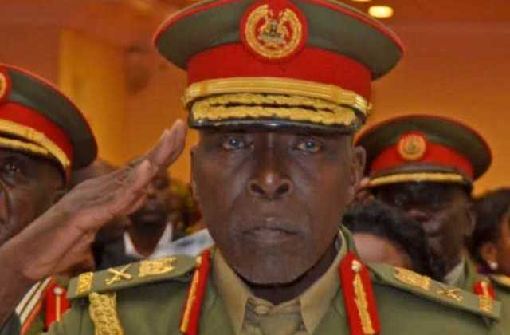

A brute & bully with a sizeable chunk of impunity to match
Major General Kasirye Ggwanga (26 August 1952 – 9 June 2020), was a Ugandan military General in the Uganda People's Defence Force.[1] He was previously incarcerated as a prisoner of war for 897 days, inside both Uganda and Tanzania.[2] He was a presidential advisor on Buganda Kingdom affairs. He was well respected for his fight towards environmental protection.

Kasirye Ggwanga's Last Salute
The following list is a time line of Kasirye Ggwanga's Life
1952 - He was born in Katakala, Mityana District
1972 - He joined the Uganda Army in 1972.
1977 - Following boot camp and initial training, he was posted to Arua in the West Nile sub-region, as a map reader, serving in that capacity until 1977.
1978 - He was promoted to the position of artillery officer and the following year, he was promoted to the rank of staff sergeant.
1978 - the Tanzania People's Defence Force (TPDF) invaded Uganda. In April they captured Kampala and deposed Idi Amin. Kasirye Ggwanga surrendered and was taken to Tanga, Tanzania, as prisoner of war number 17341.
1980 - President Godfrey Binaisa negotiated the return of the political prisoners to Uganda. They were first housed at Maluku Prison in Mbale District. Later, they were moved to Kirinya Prison, Jinja District. On 7 October 1981, Kasirye Ggwanga was in the first batch to be released.
1985 - He left UFA and joined Yoweri Museveni's National Resistance Army, which seized power in January 1986
1986-2005 - He served in several roles including as the LC5 chairman for Mubende District and as the director of stores in the UPDF
2005 - He was retired from the UPDF at the rank of Brigadier.[3][5] However, after three months on the outside he came back to the military and asked to be re-instated. The UPDF commander-in-chief allowed him to rejoin on a renewable contract of five years.
2018 - Kasirye Ggwanga was promoted from the rank of Brigadier to that of Major General, in a promotions exercise involving 1,384 men and women of the UPDF. He was also officially retired from the Uganda military, in 2018.